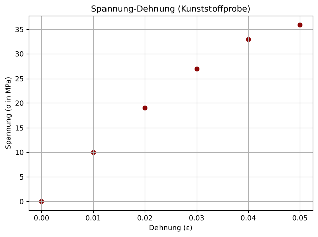
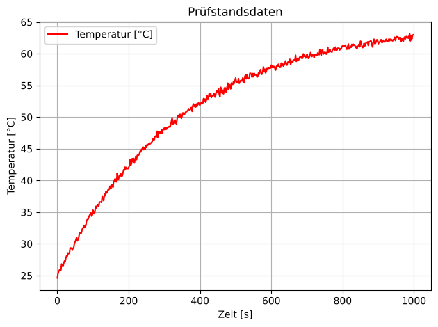

Module importieren, Aliase verwenden, fehlende Pakete installieren und die Begriffe Modul, Paket und Bibliothek unterscheiden
NumPy-Arrays erzeugen und für Matrixoperationen, Vektorisierung und Broadcasting nutzen
Funktionen und Messwerte mit Matplotlib darstellen (Linien-, Streu- und Balkendiagramm) und eine Ausgleichskurve anpassen
Messdaten mit pandas einlesen, sich einen Überblick verschaffen und neue Größen berechnen
In diesem Kapitel führen wir kurz in die Verwendung von Bibliotheken ein. Es gibt unzählige praktische Bibliotheken, die Entwicklerinnen und Entwicklern auf der ganzen Welt das Leben leichter machen. Natürlich können wir im Rahmen dieser Einführung nur einen kurzen Einblick geben: Wir erklären allgemein, was eine Bibliothek ist, wie man sie verwendet und installiert, und werfen dann einen exemplarischen Blick auf bekannte Bibliotheken, die Ihnen mit hoher Wahrscheinlichkeit in Ihren Projekten begegnen und helfen werden.
9.1 Einführung
Eine Bibliothek ist eine Sammlung von fertigem Code, die Sie in Ihrem Programm nutzen können. So müssen Sie das Rad nicht immer wieder neu erfinden! Außerdem sind Bibliotheken oft hochoptimiert, teilweise “unter der Haube” in anderen Programmiersprachen geschrieben, um eine bessere Performance zu erzielen (z.B. in C oder C++).
Bevor wir eine Bibliothek in unserem Programm verwenden können, müssen wir sie importieren:
import math # importiert die Bibliothek math # jetzt kann math genutzt werden und das geht so:print(math.sqrt(256)) # Wurzel ziehenprint(math.cos(2*math.pi)) # Trigonometrieprint(math.factorial(5)) # Fakultät# vieles mehr ist möglich mit math ...
16.0
1.0
120
Wie Sie am Beispiel erkannt haben, wird der Name der Bibliothek den Funktionen vorangestellt. Über den . greifen Sie auf die Inhalte der Bibliothek zu. Man kann auch nur ausgewählte Elemente der Bibliothek importieren:
from math import cos, sin, pi # nur die genannten werden importiertprint(cos(2*pi) + sin(2*pi)) # das Präfix math fällt weg
0.9999999999999998
Tipp: Ich bevorzuge es, zu sehen, aus welcher Bibliothek die Funktionen stammen. So werden auch potenzielle Konflikte mit eigenen Bezeichnungen vermieden. Daher nutze ich meistens die obere Variante.
Aliase
Es ist möglich und auch üblich, einer Bibliothek beim Importieren einen Kurznamen (sog. Alias) zu geben. Wir könnten z.B. die math-Bibliothek mit m abkürzen:
import math as m # importiert math mit Alias m# Verwendung:print(m.sqrt(225), m.cos(m.pi), m.factorial(3))
15.0 -1.0 6
Häufig verwendete Bibliotheken haben mittlerweile Standard-Aliase, die so gut wie immer verwendet werden. Wir listen einige berühmte Beispiele auf:
Bibliothek
Typischer Alias
Import
Anwendungsbereich
numpy
np
import numpy as np
Numerische Mathematik
matplotlib.pyplot
plt
import matplotlib.pyplot as plt
Visualisierung / Diagramme
pandas
pd
import pandas as pd
Datenanalyse und Tabellenverarbeitung
seaborn
sns
import seaborn as sns
Statistische Datenvisualisierung
tensorflow
tf
import tensorflow as tf
Maschinelles Lernen / Neuronale Netze
Installation
Nicht alle Bibliotheken sind auf unserem System vorinstalliert; manche müssen bei Bedarf erst heruntergeladen und installiert werden. Das geht zum Glück mithilfe von Paketverwaltungssoftware wie pip oder conda sehr einfach. Nehmen wir an, wir möchten die Bibliothek requests (für HTTP-Requests) installieren:
Mit pip (für Standard-Python ohne Anaconda)
Im Terminal oder in der Konsole eingeben:
pip install requests
Mit Anaconda
Starten Sie Anaconda Prompt und tippen Sie ein:
conda install requests
Über die grafische Oberfläche von Anaconda
Starten Sie Anaconda Navigator.
Wählen Sie „Environments“ und setzen Sie den Filter auf „not installed“ oder „all“.
Verwenden Sie „Search Packages“, um das gewünschte Paket zu finden (z.B. requests).
Häkchen setzen und „Apply“ klicken.
Kurze Begriffsklärung: Modul, Paket, Bibliothek
Diese drei Begriffe gehen manchmal durcheinander und werden nicht immer sauber voneinander getrennt:
Modul:
Eine einzelne Datei mit Python-Code (.py), die Funktionen, Klassen oder Variablen enthält.
Paket: Ein strukturierter Ordner mit mehreren Modulen.
Bibliothek: Ein allgemeiner Begriff für Module und Pakete, die bestimmte Aufgaben lösen (z.B. Datenanalyse).
Bei der praktischen Verwendung von Bibliotheken ist die Unterscheidung in der Regel nicht so wichtig: Wir importieren math (ein Modul) oder pandas (ein Paket), um Probleme zu lösen, die uns in unseren Projekten begegnen. Wenn wir dagegen selbst Module oder Bibliotheken für die Community entwickeln möchten, werden die Details natürlich wichtig.
9.2 NumPy
Überblick
NumPy (Numerical Python) ist eine der zentralen Bibliotheken im wissenschaftlichen Rechnen mit Python. Sie bietet leistungsfähige Datenstrukturen, insbesondere das n-dimensionale Array, und eine breite Palette mathematischer Funktionen zur effizienten Verarbeitung großer Datenmengen. Für Ingenieurinnen und Ingenieure ist NumPy besonders wertvoll, da es numerische Simulationen, Datenanalyse und Algorithmenentwicklung deutlich vereinfacht und beschleunigt. Damit es keine Missverständnisse gibt: Numerisch bedeutet, dass wir in NumPy immer mit konkreten Zahlen rechnen und solche als Ergebnisse erhalten. Das Gegenteil wären symbolische Berechnungen, bei denen es darum geht, eine Formel als Lösung für ein Problem zu finden. Hierfür gibt es übrigens auch eine Python-Bibliothek: SymPy (Symbolic Python).
Drei Highlights von NumPy für die Ingenieurpraxis:
Effiziente Matrixoperationen: Lineare Algebra ist das Rückgrat vieler ingenieurtechnischer Berechnungen, z.B. in der Statik, Regelungstechnik oder Signalverarbeitung. NumPy ermöglicht schnelle und speichereffiziente Operationen auf Matrizen – inklusive Inversion, Eigenwertberechnung oder Lösung linearer Gleichungssysteme.
Schnelle Datenverarbeitung: Dank einer optimierten Implementierung (der rechenintensive Kern ist in C geschrieben) ist NumPy um ein Vielfaches schneller als Standard-Python-Schleifen. Das ist ideal für Messdatenanalysen oder Simulationen, bei denen Zeit eine kritische Rolle spielt.
Nahtlose Integration mit anderen Tools: NumPy bildet die Grundlage für viele andere wissenschaftliche Bibliotheken wie SciPy, pandas oder Matplotlib. So lässt es sich leicht in bestehende Arbeitsabläufe integrieren – vom Datenimport bis zur Visualisierung der Ergebnisse.
NumPy wird üblicherweise mit dem Alias np importiert:
import numpy as np
Arrays
In NumPy arbeitet man mit dem optimierten Datentyp ndarray. Wir sagen auch vereinfacht nur “Array” oder “NumPy-Array”. Das “nd” steht für “n-dimensional”, denn ein NumPy-Array kann genau wie die Liste als Vektor, Matrix oder höherdimensionaler Tensor (Verallgemeinerung einer Matrix auf mehr Dimensionen) angelegt werden. Es gibt einen wichtigen Unterschied zur Liste: Alle Elemente eines NumPy-Arrays müssen denselben Datentyp haben!
Erzeugung von Arrays
Arrays werden typischerweise aus Listen erzeugt oder mit speziellen Funktionen:
# 1-dimensionales Array aus einer Python-Listevector = np.array([1, 2, 3, 4])print(vector)
[1 2 3 4]
print(type(vector))
<class 'numpy.ndarray'>
# 2-dimensionales Array aus einer Python-Listematrix = np.array([[1, 2],[3, 4]])print(matrix) # erkennen Sie den Unterschied zu der Ausgabe einer verschachtelten Liste?
[[1 2]
[3 4]]
print(type(matrix))
<class 'numpy.ndarray'>
# Mit np.zeros und np.oneszeros = np.zeros((2, 3)) # 2 x 3 Matrix mit Nullen print(zeros)
[[0. 0. 0.]
[0. 0. 0.]]
ones = np.ones((3, 4)) # 3 x 4 Matrix mit Einsenprint(ones)
[[1. 1. 1. 1.]
[1. 1. 1. 1.]
[1. 1. 1. 1.]]
# Mit np.arange(start, stop, step)# verhält sich analog zu range(start, stop, step), aber step kann auch ein Float sein!arange_test = np.arange(0, 10, 2) print(arange_test)
[0 2 4 6 8]
arange_test2 = np.arange(0, 5, 0.5) # step ist hier ein Float# Vorsicht: Bei Float-Schrittweiten können Rundungsfehler ein Element zu viel oder zu wenig# erzeugen – für eine feste Anzahl Punkte besser np.linspace verwenden (siehe unten).print(arange_test2)
[0. 0.5 1. 1.5 2. 2.5 3. 3.5 4. 4.5]
# Mit np.linspace(start, stop, num) # erzeugt man ein Array mit äquidistanten Punkten zwischen# den Grenzen start und stop (standardmäßig beide eingeschlossen!). # Es werden insgesamt num Punkte erzeugt.linspace_test = np.linspace(0, 1, 5)# Es werden exakt 5 äquidistante Werte von 0 bis 1 erzeugtprint(linspace_test)
[0. 0.25 0.5 0.75 1. ]
# Ein zweites Beispiel:linspace_test2 = np.linspace(-2, 3, 10)# Es werden exakt 10 äquidistante Werte von -2 bis 3 erzeugtprint(linspace_test2)
Bei np.linspace(start, stop, num) sind Anfangs- und Endwert standardmäßig inkludiert! Dies ist ein wichtiger Unterschied zu np.arange(start, stop, step) oder range(start, stop, step).
Möchte man den Endwert bei np.linspace bewusst exkludieren, kann dies über das Keyword-Argument endpoint erfolgen: np.linspace(start, stop, num, endpoint = False) # Endpunkt ausgeschlossen
Dimensionen und Shape
Jedes Array hat die Attribute .ndim (Anzahl Dimensionen), .shape (Größe pro Dimension) und .size (Gesamtzahl der Elemente):
my_array = np.array([[1, 2, 3], [4, 5, 6]])print("Array:")print(my_array)print("Dimensionen:", my_array.ndim) # Matrix, also 2-dimensionalprint("Shape:", my_array.shape) # 2 x 3 Matrixprint("Anzahl Elemente:", my_array.size) # 6 Elemente
Der Zugriff auf Elemente erfolgt ähnlich wie bei Python-Listen. Bei mehrdimensionalen Arrays werden die Indizes jedoch durch Kommata getrennt innerhalb eines einzigen Paares von eckigen Klammern.
Ein wichtiger Unterschied zu Python-Listen betrifft das Slicing. Bei einer Liste erzeugt ein Slice wie liste[0:2] eine (flache) Kopie der Liste (siehe Kapitel Datenstrukturen). Bei einem NumPy-Array entsteht dagegen keine Kopie, sondern eine sog. View (Ansicht): ein neues Array-Objekt, das auf dieselben Daten im Speicher zeigt. NumPy spart sich so das Kopieren, was bei großen Arrays viel Zeit und Speicher spart. Die Kehrseite: Ändert man die View, ändert sich auch das ursprüngliche Array – ein Seiteneffekt, wie wir ihn von Listen kennen, wenn zwei Variablen auf dieselbe Liste zeigen:
data = np.array([[1, 2, 3], [4, 5, 6]])row = data[0, :] # View auf die erste Zeile (keine Kopie!)row[0] =99# wir ändern die View ...print(data) # ... und das Original hat sich mitgeändert!
[[99 2 3]
[ 4 5 6]]
Zum Vergleich dasselbe Vorgehen mit einer Liste. Hier ist der Slice eine Kopie, das Original bleibt unverändert:
numbers = [1, 2, 3]part = numbers[0:2] # Kopie der ersten beiden Elementepart[0] =99print(numbers) # unverändert
[1, 2, 3]
Wenn Sie mit einem Ausschnitt eines Arrays weiterarbeiten wollen, ohne das Original zu verändern, erzeugen Sie mit .copy() ausdrücklich eine Kopie:
row_copy = data[1, :].copy() # echte Kopie der zweiten Zeilerow_copy[0] =-1print(row_copy)print(data) # unverändert
[-1 5 6]
[[99 2 3]
[ 4 5 6]]
Demo: Matrixoperationen mit Arrays
import numpy as np# 3x3 Matrix als np.arrayA = np.array([[2, 1, 3], [0, -1, 4], [5, 2, 0]])# ein Vektorb = np.array([1, 2, 3])# Matrix mal Vektor (Matrix-Vektor-Produkt):v = np.dot(A, b)# WARNUNG: Es ist wichtig, np.dot zu verwenden und nicht *# Letzteres führt kein Matrix-Vektor-Produkt, sondern eine # elementweise Multiplikation durch! print("np.dot(A, b) =", v)
np.dot(A, b) = [13 10 9]
Es gibt auch eine Kurzschreibweise für np.dot(..) mit dem @-Operator:
print("A @ b =", A @ b)
A @ b = [13 10 9]
Wir demonstrieren einmal, was passiert, wenn man mit dem *-Operator multipliziert:
print(A * b) # elementweise Multiplikation! Das ist NICHT das Matrixprodukt!
[[ 2 2 9]
[ 0 -2 12]
[ 5 4 0]]
Skalar- und Matrixprodukte immer mit np.dot(...) oder dem @-Operator!
Der Aufruf np.linalg.solve(A, b) löst das lineare Gleichungssystem:
x = np.linalg.solve(A, b) # finde x, so dass A x = bprint(x)
[ 1.31578947 -1.78947368 0.05263158]
Überprüfen wir das Ergebnis, indem wir A x berechnen und mit b vergleichen:
print(A @ x, "Zum Vergleich: ", b)
[1. 2. 3.] Zum Vergleich: [1. 2. 3.]
Übung: Lineare Gleichungssysteme begegnen uns bei der Lösung verschiedener technischer Probleme, z.B. bei statischen Berechnungen oder der Bestimmung von Strömen und Spannungen in Schaltkreisen. Als Beispiel sei das folgende System für drei unbekannte Ströme gegeben, das mithilfe der kirchhoffschen Regeln für Gleichstromnetze hergeleitet wurde [Komplette Aufgabe “Stromkreis mit drei Maschen”]: \[
\begin{aligned}
I_1 - I_2 - I_3 &= 0 \\
-10.8 \,V + I_1\cdot 6\,\Omega + I_2\cdot 8\,\Omega &= 0 \\
3.2\,V + I_3 \cdot 4\,\Omega - I_2\cdot 8\,\Omega &= 0
\end{aligned}
\]
Bestimmen Sie die drei unbekannten Ströme \(I_1, I_2, I_3\) mithilfe von NumPy!
Code
import numpy as np# Die Lösung erfolgt in 3 Schritten:# 1. Zunächst bringen wir das Gleichungssystem in die richtige Form! # Da nur SI-Einheiten verwendet werden, können wir alle Einheiten weglassen und wissen, dass das Ergebnis in Ampere sein wird.#1 I_1 - 1 I_2 - 1 I_3 = 0 #6 I_1 + 8 I_2 + 0 I_3 = 10.8 #0 I_1 - 8 I_2 + 4 I_3 = -3.2# 2. Jetzt legen wir Matrix und rechte Seite als Arrays an: A = np.array([[1., -1., -1.], [6., 8., 0.], [0., -8., 4]])b = np.array([0., 10.8, -3.2])# 3. Jetzt lösen wir das System:I = np.linalg.solve(A, b)print("Die drei unbekannten Stromstärken sind:")print(f"I_1 = {I[0]: .2f} A")print(f"I_2 = {I[1]: .2f} A")print(f"I_3 = {I[2]: .2f} A")
Demo: Vektorisierung
NumPy bietet vektorisierten Code, d. h. mathematische Operationen wie Addition, Subtraktion, Multiplikation auf Arrays werden auf alle Elemente angewendet, ohne dass wir eine Schleife schreiben müssen (die Schleife läuft intern in schnellem, kompiliertem Code). Dies ist viel schneller als manuelle Schleifen über Listen!
Wir erstellen zunächst ein Array mit \(x\)-Werten, an denen wir eine Funktion auswerten wollen:
x_values = np.array(range(10)) # Array mit den x-Werten 0, 1, 2, ..., 9 print(x_values)
[0 1 2 3 4 5 6 7 8 9]
An diesen Stellen sollen Funktionswerte der folgenden Funktion berechnet werden: \(f(x) = 3\,x^3 - x^2 + 2\,x + 1\). Vektorisierung bedeutet, dass wir die Rechenoperationen mit dem Array x_values durchführen können und NumPy diese elementweise durchführt. Das ist kinderleicht:
f_values =3* x_values**3- x_values**2+2* x_values +1# berechnet f(x) für jeden x-Wertprint(f_values) # das Ergebnis ist wieder ein Array!
[ 1 5 25 79 185 361 625 995 1489 2125]
Wir benötigen keine Schleife und die Operationen werden sogar optimiert, also sehr schnell, ausgeführt. In der numerischen Mathematik kommen solche Operationen sehr häufig vor. Im Abschnitt zu Matplotlib werden wir sehen, wie man Vektorisierung verwendet, um mit wenigen Zeilen einen Funktionsgraphen zu zeichnen.
Wir können natürlich auch komplexere mathematische Funktionen berechnen. Das wollen wir an \(g(x) =\frac{1}{2} \sqrt{x}\) und \(h(x) = x\, e^{x^2}\) demonstrieren:
g_values =1/2* np.sqrt(x_values) # berechnet Funktionswerte von g an den x-Stellenprint(g_values)
Wichtig ist, dass wir in den beiden letzten Beispielen die Mathe-Funktionen aus NumPy verwendet haben, also np.sqrt(...) bzw. np.exp(...). Andere Mathebibliotheken (z.B. math) sind nicht für vektorisierte Operationen auf NumPy-Arrays ausgelegt.
Die beiden Funktionen np.linspace(...) und np.arange(...) werden oft zusammen mit Vektorisierung verwendet. Zum Beispiel erstellt man mit np.linspace(...) ein Array von \(x\)-Werten und berechnet dann mithilfe von Vektorisierung die zugehörigen \(y\)-Werte einer Funktion. Das könnte so aussehen wie im folgenden Beispiel:
xs = np.linspace(-np.pi, np.pi, 100) # 100 Punkte zwischen -pi und piys = np.sin(xs) # Funktionswerte von sin(x) an den zuvor berechneten Stellenprint("Auswertung an einer Beispielstelle:")print("x =", round(xs[20],2), ", sin(x)=", round(ys[20],2))# Teaser: Matplotlib kann mit diesen Werten einen Funktionsgraphen zeichnen!
Auswertung an einer Beispielstelle:
x = -1.87 , sin(x)= -0.95
Demo: Broadcasting
NumPy unterstützt sog. “Broadcasting”, sodass auch Arrays unterschiedlicher Formen miteinander rechnen können, ohne dass wir diese mühsam aneinander anpassen müssen.
Ein Beispiel zu Broadcasting:
A = np.array([[1, 0, 0], [0, 2, 0], [0, 0, 3]])v = np.array([1, 2, 3])B = A + v # das passt eigentlich nicht!
Die letzte Zeile führt überraschenderweise nicht zu einem Programmfehler, obwohl man A und v mathematisch gar nicht addieren kann. In solchen Fällen geschieht Broadcasting: “Was nicht passt, wird passend gemacht (falls möglich)!”. Schauen wir uns das Ergebnis genauer an:
print(B)
[[2 2 3]
[1 4 3]
[1 2 6]]
Wir sehen: Der Vektor v wurde zu jeder Zeile von A addiert – so, als hätte man ihn dreimal untereinander geschrieben. Die Regel dahinter: NumPy vergleicht die Formen (shapes) der Arrays von hinten. Zwei Dimensionen passen zusammen, wenn sie gleich sind oder eine davon 1 ist bzw. fehlt. Entlang einer solchen Dimension mit Größe 1 (bzw. einer fehlenden) wird das Array gedanklich vervielfältigt – hier wird aus der Form (3,) die Form (3, 3). Passen die Formen nicht zusammen, meldet NumPy einen ValueError. Man muss aufpassen, dass man kein unbeabsichtigtes Broadcasting durchführt und unerwartete Ergebnisse erhält.
Übungen:
Erzeugen Sie 100 \(x\)-Werte zwischen \(-2\) und \(5\) und berechnen Sie zu jedem dieser Werte den Funktionswert von \(f(x) = \frac{e^{-x}}{1 + x^2}\). Geben Sie exemplarisch den Funktionswert für ein zufällig ausgewähltes \(x\) aus (auf zwei Nachkommastellen gerundet)!
Erzeugen Sie ein Array, das 1000 Zeitpunkte zwischen t=0 s und t= 100 s beinhaltet. Ein Körper befinde sich zum Zeitpunkt t=0 an der Position x(0)=0 und bewege sich gleichmäßig mit der Geschwindigkeit v= 2.5 m/s in positive x-Richtung. Erstellen Sie ein Array, das die x-Position zu jedem Zeitpunkt t angibt. Geben Sie die Position zum Zeitpunkt t=100 s aus.
Multiplizieren Sie zwei 3x3 Matrizen miteinander.
Wie können Sie Broadcasting und Transponieren kombinieren, um einen Vektor v zu jeder Spalte einer Matrix zu addieren?
Lösungen:
Code
import numpy as np# Übung 1 xs = np.linspace(-2, 5, 100)ys = np.exp(-xs)/(1+ xs**2)print(f"Übung 1: f({round(xs[30],2)}) = {round(ys[30],2)}")# Übung 2ts = np.linspace(0,100, 1000)xs =2.5* ts # x = velocity * timeprint("\nÜbung 2:\nx(t = 100s) =", xs[-1])# Übung 3A = np.array([[1, 2, 3], [1, 2, 3], [1, 2, 3]])B = np.ones((3, 3))C = np.dot(A, B) # oder C = A @ Bprint("\nÜbung 3:", "A =", A, "B = ",B, "A @ B = ", C, sep="\n")# Übung 4A = np.array([[1, 2, 3], [1, 2, 3], [1, 2, 3]])v = np.array([-1, 0, -2]) # soll zu jeder Spalte addiert werden# A wird transponiert und v addiert,# dann wird das Ergebnis zurücktransponiert:result = (A.T + v).Tprint("\nÜbung 4:","A =", A,"v =",v, "A + v (spaltenweise)", result, sep="\n")
9.3 Matplotlib
Matplotlib ist die Standard-Bibliothek in Python zum Erstellen von Diagrammen. Der am häufigsten verwendete Teil ist das Untermodul pyplot (eine Schnittstelle, über die das Modul leicht zu bedienen ist), das man fast immer mit dem Alias plt importiert.
import matplotlib.pyplot as plt # Standard-Import für matplotlib
Mit Matplotlib kann man die unterschiedlichsten Arten von Diagrammen erzeugen. Auch hier können wir nur ein paar exemplarische Beispiele demonstrieren.
Eine Funktion plotten
Um eine Funktion zu plotten, arbeiten wir mit Matplotlib und NumPy zusammen: NumPy erzeugt die x- und y-Werte, Matplotlib stellt diese in einem einfachen Linienplot dar. Linienplot heißt, dass gerade Linien von Punkt zu Punkt gezogen werden. Wenn es ausreichend viele Punkte sind, entsteht der Eindruck einer glatten Kurve. Los geht’s:
import matplotlib.pyplot as pltimport numpy as np# Punkte erzeugen mit NumPyx_values = np.linspace(0, 50, 100) # 100 Punkte zwischen 0 und 50y_values = x_values**2# Vektorisierung: so einfach rechnet man mit NumPy-Arrays!# Liniendiagramm erzeugen mit Matplotlib plt.plot(x_values, y_values)# Es folgen Einstellungen zur Darstellung (z.B. Beschriftung)plt.title(r"$y = x^2$") # Titel plt.xlabel("x") # Beschriftung x-Achseplt.ylabel("y") # Beschriftung y-Achseplt.tight_layout() # optimiert bei Bedarf den Zeichenbereich, damit nichts abgeschnitten wirdplt.grid(True) # zeigt ein Gitter zum einfacheren Ablesen der Werte# Finally:# Der eigentliche Befehl zum Rendern (= Zeichnen).plt.show() # öffnet ein Fenster (oder rendert im Notebook) und zeigt den Plot.# PS: Der Befehl plt.show() wird von Jupyter oft automatisch aufgerufen, an anderer Stelle braucht man# ihn aber explizit. Wir schreiben ihn daher immer hin.
Verwendung von LaTeX-Befehlen in Strings
Beim Plotten von Funktionen verwendet man häufig LaTeX-Befehle, um Achsen, Titel oder Labels zu beschriften. Beispielsweise kann die Funktion
\(f(x)=\frac{1}{1+x^2}\)
in Matplotlib so als String dargestellt werden:
"$\frac{1}{1+x^2}$"
In Python hat der Backslash \ jedoch die Bedeutung eines Escape-Zeichens, z.B. für Zeilenumbrüche (\n) oder Tabulatoren (\t). Damit Python den Backslash in LaTeX-Befehlen wörtlich interpretiert, verwendet man Raw Strings, indem man ein kleines r vor das String-Literal setzt:
r"$\frac{1}{1+x^2}$"
r"$\sqrt{x}$"
Dieses r teilt dem Python-Interpreter mit, dass alle Backslashes in diesem String unverändert bleiben, wodurch LaTeX-Befehle korrekt dargestellt werden.
Messwerte in einem Streudiagramm darstellen
import matplotlib.pyplot as plt# Messwertedehnung = [0.0, 0.01, 0.02, 0.03, 0.04, 0.05]spannung = [0, 10, 19, 27, 33, 36] # in MPa# Streudiagramm mit Matplotlib erzeugenplt.scatter(dehnung, spannung, color='darkred')# Einstellungen für die Darstellung:plt.title("Spannung-Dehnung (Kunststoffprobe)")plt.xlabel("Dehnung (ε)")plt.ylabel("Spannung (σ in MPa)")plt.grid(True)plt.tight_layout()# Finally: Rendernplt.show()

Haben Sie auch sofort den Gedanken: “Kann ich da eine Kurve durchlegen?”
Sie können! Allerdings muss die Kurve zunächst berechnet werden, Matplotlib ist nur für die visuelle Darstellung verantwortlich. Eine einfache Möglichkeit bietet NumPy mit polynomialer Regression: Ein Polynom vorgegebenen Grades wird an die Messwerte angepasst. Das sieht im Ergebnis zum Beispiel so aus:
Code
# Polynom 2. Ordnung fittenfrom numpy.polynomial import Polynomialpolynom = Polynomial.fit(dehnung, spannung, deg=2)x_poly = np.linspace(min(dehnung), max(dehnung), 200) # x-Werte für das Polynom# Plottenplt.scatter(dehnung, spannung, label="Messdaten", color='darkred')plt.plot(x_poly, polynom(x_poly), label="Polynom 2. Ordnung", color="green")# Einstellungen zur Darstellungplt.title("Spannung-Dehnung (Kunststoffprobe) mit Polynom-Fit")plt.legend()plt.grid(True)plt.tight_layout()# Finally: Rendernplt.show()
Plotten Sie die Funktion \(f(x)= 1 + 3\,\sqrt{x}\) im Bereich von 0 bis 10. Tipp: np.sqrt für die Wurzel.
Gegeben sind mittlere Tagestemperaturen in Grad Celsius für die Tage einer Woche: temperatures = np.array([15, 17, 14, 20, 22, 19, 16]). Stellen Sie den Verlauf visuell dar.
Gegeben sind die Verkaufszahlen von vier verschiedenen Produkten im letzten Monat: sales_numbers = [50, 75, 30, 90]. Stellen Sie die Daten in einem Balkendiagramm dar.
Lösungen:
Code
import matplotlib.pyplot as pltimport numpy as np# Übung 1xs = np.linspace(0, 10, 500)ys =1+3* np.sqrt(xs)plt.plot(xs, ys)plt.title(r"Ü1: $f(x)= 1 + 3\sqrt{x}$") # das kleine r: raw string, damit der Backslash \ als solcher erkannt wirdplt.xlabel("x")plt.ylabel("y")plt.tight_layout()plt.grid(True)plt.show()# Übung 2days = ['Mo', 'Di', 'Mi', 'Do', 'Fr', 'Sa', 'So']temperatures = np.array([15, 17, 14, 20, 22, 19, 16])plt.plot(days, temperatures, marker='o') # mit marker='o' markieren wir die Einzelpunkte# scatter-Plot wäre auch möglichplt.title("Ü2: Temperaturverlauf")plt.xlabel("Tag")plt.ylabel("mittlere Temperatur [°C]")plt.tight_layout()plt.grid(True)plt.show()# Übung 3products = ["A", "B", "C", "D"]sales_numbers = [50, 75, 30, 90]plt.bar(products, sales_numbers)plt.title("Ü3: Verkaufszahlen im letzten Monat")plt.ylabel("Verkäufe")plt.tight_layout()plt.show()
9.4 pandas
pandas ist eine Python-Bibliothek zur Datenanalyse und -verarbeitung. Sie macht es einfach, mit tabellarischen Daten zu arbeiten – wie man es von Excel oder MATLAB kennt, nur viel mächtiger! Sie ist ideal für CSV-Dateien, Zeitreihen, Sensorlogs usw. (Wie man Text- und CSV-Dateien auch ohne pandas liest und schreibt, zeigt Anhang A.)
Stellen Sie sich vor, Sie hätten eine CSV-Datei pruefstand.csv, die Messdaten von einem Elektromotor-Prüfstand auflistet, evtl. mit Tausenden oder Zehntausenden an Einträgen (die folgenden Beispieldaten sind simuliert, orientieren sich aber an einem typischen 5,5-kW-Asynchronmotor):
Mit pandas ist es ein Leichtes, die Daten zu analysieren! Wir zeigen nur ein paar wenige der vielen Features, die pandas anbietet.
import pandas as pd# CSV einlesen (statt eines Dateipfads ist auch eine URL möglich)df = pd.read_csv(r"./data/pruefstand.csv")# Excel-Dateien liest man analog mit pd.read_excel("datei.xlsx") ein# (benötigt das Paket openpyxl, in Anaconda bereits enthalten)# Die Abkürzung df ist sehr gebräuchlich und steht für 'Data Frame' = eine Tabelle# Kurze Übersicht der Datendf.head() # Zeigt die ersten 5 Zeilen
zeit_s
drehzahl_rpm
drehmoment_Nm
temperatur_C
strom_A
spannung_V
0
0
1467.292482
33.810316
24.628519
10.215087
400.397451
1
2
1461.453393
35.360857
25.326228
10.628454
400.836377
2
4
1459.733128
32.155510
25.657537
9.701253
400.415663
3
6
1453.948477
37.093658
25.887733
11.153417
400.690402
4
8
1455.790735
35.957442
25.807826
10.844173
398.828542
df.describe() # liefert statistische Kennzahlen aller Größen
zeit_s
drehzahl_rpm
drehmoment_Nm
temperatur_C
strom_A
spannung_V
count
500.000000
500.000000
500.000000
500.000000
500.000000
500.000000
mean
499.000000
1459.727502
35.047270
51.742815
10.586593
399.899417
std
288.963666
3.537586
1.571831
10.276739
0.479168
0.963109
min
0.000000
1448.249747
29.378879
24.628519
8.965309
396.941205
25%
249.500000
1457.498059
33.962797
45.445497
10.220183
399.231993
50%
499.000000
1459.804317
35.094876
55.402018
10.580069
399.918036
75%
748.500000
1462.151006
36.080189
60.201944
10.890667
400.562544
max
998.000000
1471.917075
39.726362
63.147595
12.028734
403.333527
Der describe-Befehl ist sehr nützlich: Wir sehen auf einen Blick, dass unsere Datei 500 Zeilen beinhaltet und erhalten Mittelwerte, Standardabweichungen, Wertebereiche und Quantile aller Messgrößen. Ein erster aufschlussreicher Überblick über unsere Daten!
# Mittelwerte oder andere Kennzahlen können # ganz einfach auch einzeln abgefragt werden:mean_torque = df["drehmoment_Nm"].mean()print(f"Mittleres Drehmoment: {round(mean_torque, 2)} Nm")mean_temperature = df["temperatur_C"].mean()print(f"Mittlere Temperatur: {round(mean_temperature, 2)} °C")# Wie diese Beispiele zeigen, greift man auf einzelne Spalten# eines Data Frames über einen Indexzugriff zu, ganz analog zu# Dictionaries.
Mittleres Drehmoment: 35.05 Nm
Mittlere Temperatur: 51.74 °C
Sie können auch einfach neue Spalten erzeugen, wie das folgende Beispiel zeigt. Wir berechnen aus dem Drehmoment \(M\) (in Nm) und der Drehzahl \(n\) (in Umdrehungen pro Minute) die mechanische Leistung \(P = M \cdot 2\pi n / 60\) in Watt:
# neue Spalte: mechanische Leistung P = M · ω mit ω = 2π · n / 60df["p_mech_W"] = df["drehmoment_Nm"] *2* np.pi * df["drehzahl_rpm"] /60df.head() # achten Sie auf die neue Spalte.
zeit_s
drehzahl_rpm
drehmoment_Nm
temperatur_C
strom_A
spannung_V
p_mech_W
0
0
1467.292482
33.810316
24.628519
10.215087
400.397451
5195.107562
1
2
1461.453393
35.360857
25.326228
10.628454
400.836377
5411.733090
2
4
1459.733128
32.155510
25.657537
9.701253
400.415663
4915.384443
3
6
1453.948477
37.093658
25.887733
11.153417
400.690402
5647.773785
4
8
1455.790735
35.957442
25.807826
10.844173
398.828542
5481.713820
Selbstverständlich können wir nun auch Matplotlib in Kombination mit pandas einsetzen, um Daten zu visualisieren:
import matplotlib.pyplot as plt# Plot: Temperatur über Zeitplt.plot(df["zeit_s"], df["temperatur_C"], label="Temperatur [°C]", color="red")plt.xlabel("Zeit [s]")plt.ylabel("Temperatur [°C]")plt.title("Prüfstandsdaten")plt.legend()plt.grid(True)plt.tight_layout()plt.show()

Übung: Der Motor am Prüfstand ist ein Drehstrommotor. Seine aufgenommene elektrische Wirkleistung berechnet sich aus der Leiterspannung \(U\), dem Strom \(I\) und dem Leistungsfaktor \(\cos\varphi\) (laut Typenschild 0,83) zu \(P_{el} = \sqrt{3} \cdot U \cdot I \cdot \cos\varphi\).
Fügen Sie dem Data Frame eine Spalte p_el_W mit der elektrischen Leistung hinzu.
Berechnen Sie für jeden Zeitpunkt den Wirkungsgrad \(\eta = P_{mech} / P_{el}\) als neue Spalte und geben Sie den mittleren Wirkungsgrad aus.
Ist das Ergebnis plausibel? (Typische Wirkungsgrade von Asynchronmotoren dieser Größe liegen bei 85 bis 90 %.)
Lösung:
Code
# 1. Elektrische Wirkleistung (Drehstrom)cos_phi =0.83df["p_el_W"] = np.sqrt(3) * df["spannung_V"] * df["strom_A"] * cos_phi# 2. Wirkungsgrad je Zeitpunkt und Mittelwertdf["wirkungsgrad"] = df["p_mech_W"] / df["p_el_W"]print(f"Mittlerer Wirkungsgrad: {df['wirkungsgrad'].mean():.1%}")# 3. Mit rund 88 % liegt der Wirkungsgrad im typischen Bereich – die Messdaten sind plausibel.
Ein Data Frame kann auch aus einem Dictionary erzeugt werden:
Übungen: Erzeugen Sie das Data Frame, wie im letzten Beispiel gezeigt.
Fügen Sie eine Spalte Umsatz hinzu (Umsatz = Preis * Verkaufte Menge).
Finden Sie das Produkt mit dem höchsten Umsatz.
Erstellen Sie ein Balkendiagramm mit Matplotlib, das den Umsatz jedes Produkts zeigt.
Wie groß sind Mittelwert und Standardabweichung des Umsatzes?
Lösung:
Code
import pandas as pdimport matplotlib.pyplot as plt# Daten erstellendata = {'Produkt': ['Produkt A', 'Produkt B', 'Produkt C', 'Produkt D'],'Preis': [20, 35, 50, 15],'Verkaufte Menge': [100, 150, 80, 200]}df = pd.DataFrame(data)# 1. Umsatz berechnen und als Spalte hinzufügendf['Umsatz'] = df['Preis'] * df['Verkaufte Menge']# 2. Kann durch einfaches print gelöst werden:print(df) # Produkt B hat den höchsten Umsatz!# 3. Balkendiagramm erstellenplt.bar(df['Produkt'], df['Umsatz'], color=['red', 'blue', 'green', 'purple'])plt.title('Umsatz der Produkte')plt.xlabel('Produkt')plt.ylabel('Umsatz')plt.show()# 4. Statistische Kennzahlenprint("Mittlerer Umsatz: ", df['Umsatz'].mean(), "Standardabweichung: ", df['Umsatz'].std())# Hinweis: pandas teilt bei .std() durch n-1 (Stichproben-Standardabweichung), np.std() dagegen# standardmäßig durch n. Bei großen Datenmengen spielt das kaum eine Rolle, bei nur 4 Werten wie# hier ist der Unterschied aber deutlich (np.std() ergäbe ca. 1204 statt 1390).# Kann auch über describe abgelesen werden: df.describe()